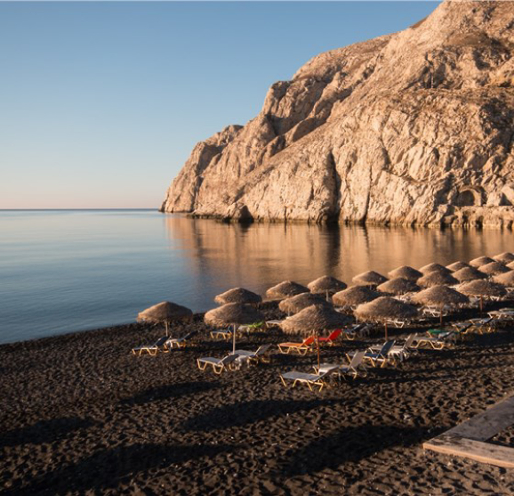

ABOUT

Have you ever seen a beach with black sand? Because of constant volcanic activity, you'll find white sands and black sands on the island of Hawai'i. Located on the southeastern Ka'ū coast, Punalu'u Black Sand Beach is one of the most famous black sand beaches in Hawai'i.